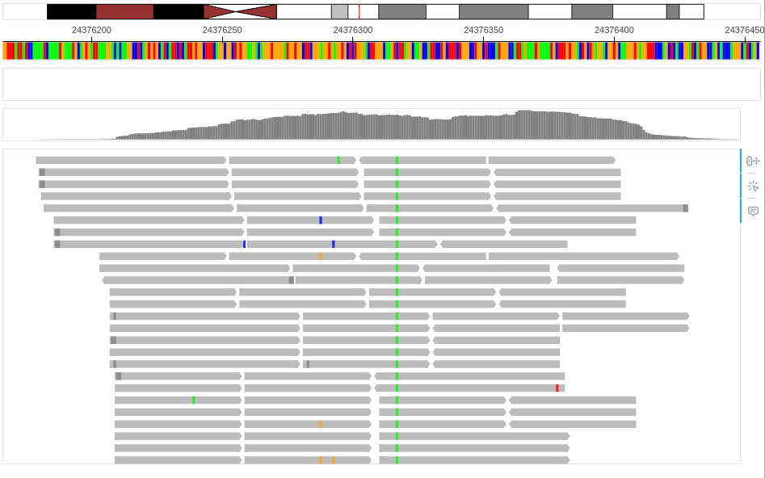
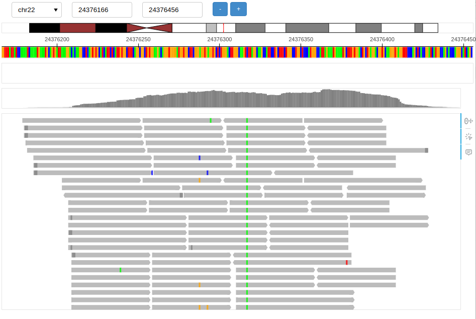
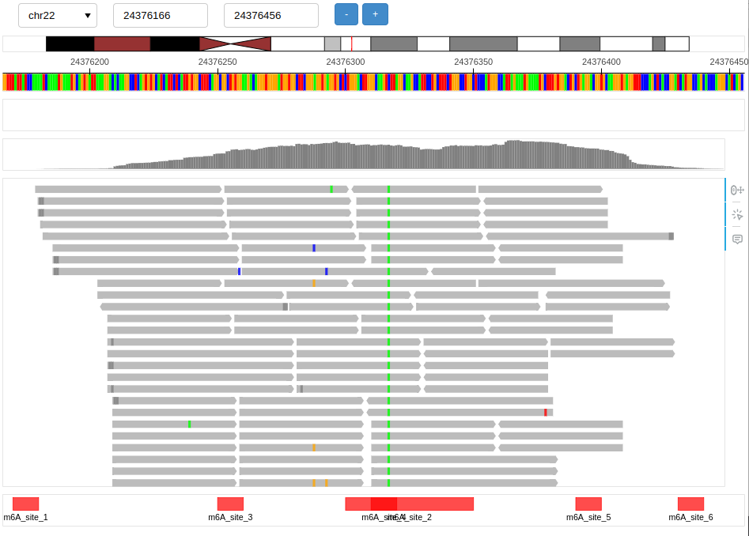
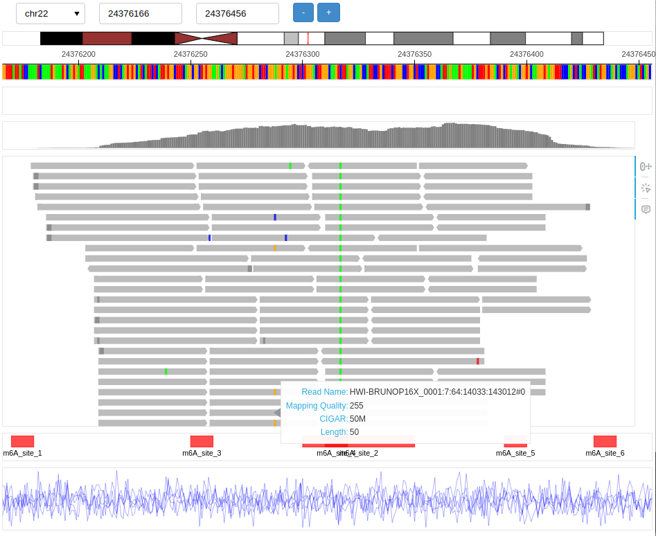

Usage
Basic setup
This setup will generate standalone HTML report and open new tab in browser.
from pileupy.main import Pileupy
browser = Pileupy('chr22:24376166-24376456', genome='hg19')
browser.add_track_alignment('data/demo.bam')
browser.show()

This setup will start interactive genome browser.
from pileupy.main import Pileupy
browser = Pileupy('chr22:24376166-24376456', genome='hg19', control=True)
browser.add_track_alignment('data/demo.bam')
browser.serve()

Tracks
Reference
Choose available genome reference detailed bellow using genome or specify reference path using reference. Choosing reference from available genome will also load Idiogram and RefSeq track.
- Human hg19
hg19 - Human hg38
hg38
from pileupy.main import Pileupy
browser = Pileupy('chr22:24376166-24376456', genome='hg19')
# browser = Pileupy('chr22:24376166-24376456', reference='/foo/bar/hg19.fa')
Alignment
Add aligment track using add_track_alignment. Format supported is SAM, BAM, and CRAM.
from pileupy.main import Pileupy
browser = Pileupy('chr22:24376166-24376456', genome='hg19')
browser.add_track_alignment('data/demo.bam')
Disable SNP highlight
browser.add_track_alignment('data/demo.bam', snp=False)
Group reads by phasing
browser.add_track_alignment('data/demo.bam', phasing=True)
Annotations
Add annotation track using add_track_annotation. Format supported is BED.
browser.add_track_annotation('data/mod.bed')

Data Frame
Add data frame track using add_track_annotation. Input used is pandas data frame with at least following columns chrom, start, value
import pandas as pd
import numpy as np
contig = "chr22"
start = 24376166
end = 24376456
positions = np.arange(start, end + 1)
num_reads = 5 # You can change this number based on the number of reads you want
data = []
for read_id in range(num_reads):
values = np.random.normal(loc=0, scale=1, size=len(positions)) # Gaussian noise for each read
read_data = {
'chrom': [contig] * len(positions),
'start': positions,
'end': positions + 1,
'value': values,
'read_names': [read_id] * len(positions)
}
df_read = pd.DataFrame(read_data)
data.append(df_read)
final_df = pd.concat(data, ignore_index=True)
browser.add_track_df(final_df)
